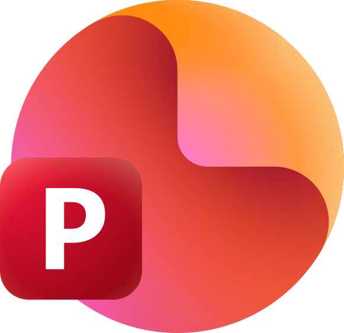
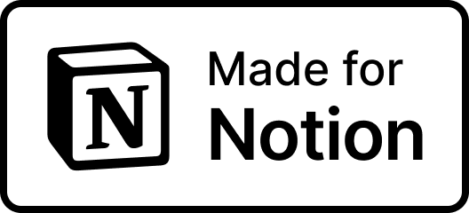

Kuroneko
Coffee
Featured
ゲーム1
一言説明（例：2Dアクション）
What I Value
ゲームを作るときに、常に大事にしていること
短時間で直感的に楽しいと感じる体験を提供
操作の気持ちよさや、短時間でも盛り上がる構成を意識して制作しています。
試行錯誤と改善を楽しむ姿勢
うまくいかなかった部分も、原因を考えて改善する過程を楽しんでいます。仮説を立てて試し、より良い形に近づけていくことに価値を感じます。
オリジナリティ・個性やアイデアを大切にすること
ゲームのシステムや世界観に、少しでもオリジナリティや独自性が感じられることを大切にしています。
チームメンバー・ユーザー視点を忘れない
制作では、プレイヤーや一緒に作る人の視点を意識するよう心がけています。分かりやすさや共有しやすさを重視しています。
Skills
できること・強み「何を実現できるか」
Unity（ゲーム制作全般）
実装〜調整まで一通り回せる
C#
ゲームロジック / 拡張しやすい設計
UI実装
分かりやすい情報設計 / 操作導線
演出
気持ちよさ・テンポ・見栄えの調整
ゲームルール設計
短時間で盛り上がる勝敗構造づくり
パラメータ調整
触って分かるバランス / リズム作り
データ駆動設計
調整しやすいテーブル / 伸ばせる構造
プロトタイプ制作
まず作って試す→磨くのが得意
Tools
制作環境（ソフト・サービス）

Workflow
制作の進め方

